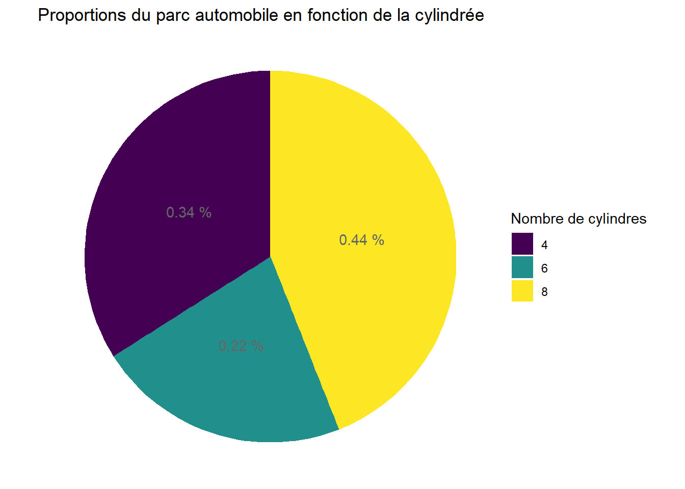
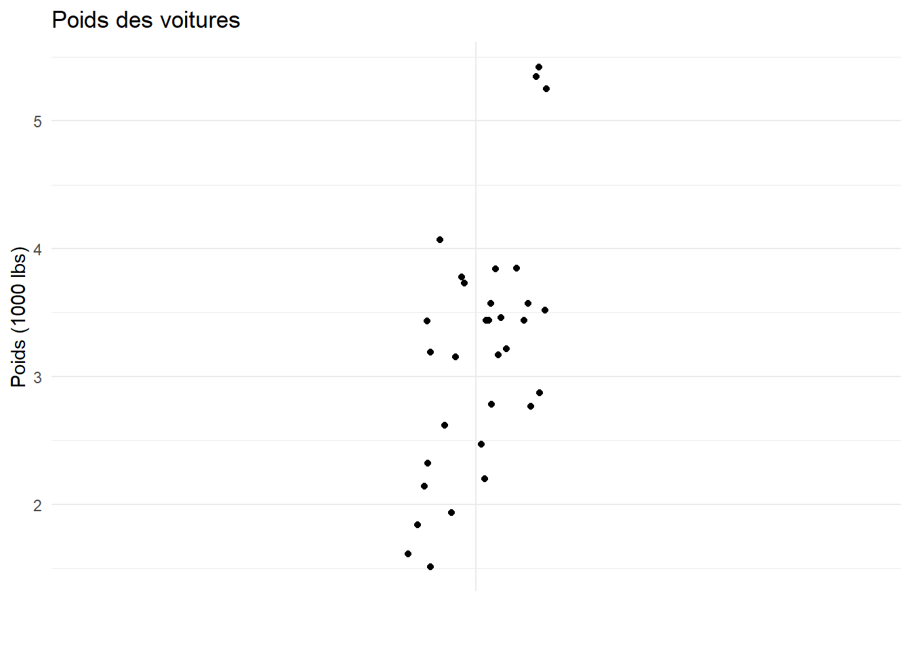
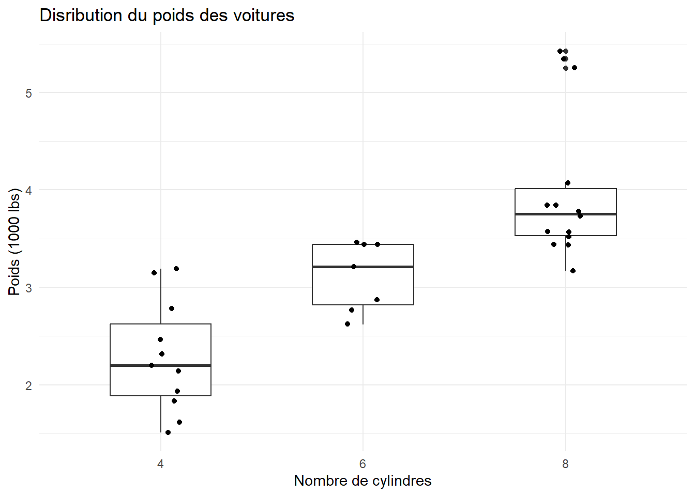
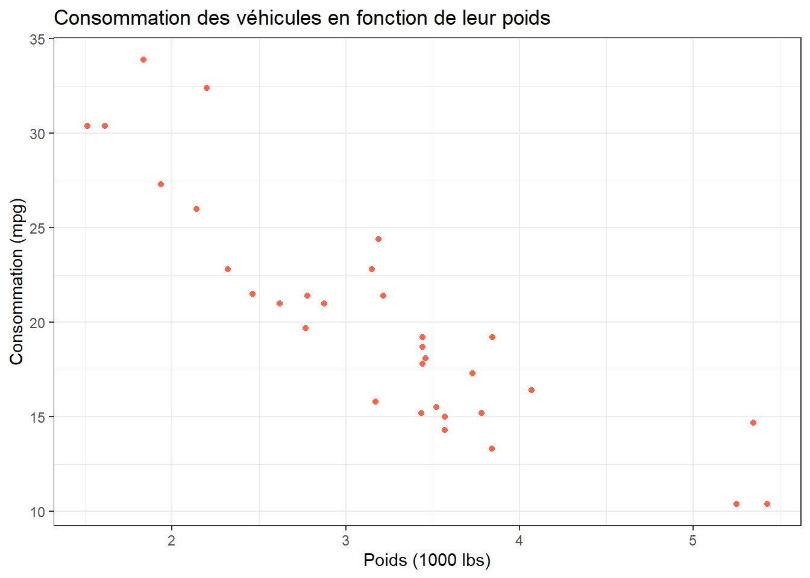

library(ggplot2)TD5 : Graphiques avec ggplot2
On s’intéresse dans ce TD à certaines représentations graphiques pouvant être réalisées en R.
La plupart de ces graphiques peuvent être réalisés avec les packages de base, mais le package ggplot2, disponible avec la collection tidyverse permet d’élaborer des graphiques visuellement beaucoup plus satisfaisants.
On le charge dans R avec
ou bien
library(tidyverse)── Attaching core tidyverse packages ──────────────────────── tidyverse 2.0.0 ──
✔ dplyr 1.1.4 ✔ readr 2.1.5
✔ forcats 1.0.0 ✔ stringr 1.5.1
✔ ggplot2 3.5.1 ✔ tibble 3.2.1
✔ lubridate 1.9.3 ✔ tidyr 1.3.1
✔ purrr 1.0.2
── Conflicts ────────────────────────────────────────── tidyverse_conflicts() ──
✖ dplyr::filter() masks stats::filter()
✖ dplyr::lag() masks stats::lag()
ℹ Use the conflicted package (<http://conflicted.r-lib.org/>) to force all conflicts to become errors1 Graphiques univariés
1.1 Pour une variable qualitative
- On peut représenter une variable qualitative (i.e. un facteur) par un diagramme en barres.
Par exemple, avec le jeu de données mtcars, on peut représenter le nombre de voitures correspondant à chaque cylindrée.
data("mtcars")
ggplot(mtcars)+
aes(x = factor(cyl))+
geom_bar()+
labs(x="Nb cylindres",
y="Nb voitures",
title = "Diagramme en barres")Remarque : Un graphique ggplot commence toujours par la même fonction du même nom, dans laquelle on indique le data-frame contennt les données (obligatoirement un data-frame !) et aes (Aesthetic) qui décrit les données considérées par le graphique. On ajoute ensuite les fonctions correspondnat au graphique souhaité.
- Ici,
geom_bar()est la fonction permettant d’effectuer le diagramme en barres. - La fonction
labs()permet d’ajouter des titres aux axes et au graphique.
On peut aussi paramétrer le fond du graphique :
ggplot(mtcars)+
aes(x=factor(cyl))+
geom_bar()+
labs(title="Diagramme en barres",
x="Nb cylindres",
y="Nb voitures")+
theme_minimal() # Fond du graphique- On peut aussi représenter une variable qualitative par un diagramme circulaire (pie chart).
# On crée un data-frame ou l'on compte le nombre de voitures pour chaque cylindrée
# puis on calcule le pourcentage de ces véhicules
cyl_count <- as.data.frame(table(mtcars$cyl)) %>%
rename(Nb_cyl=Var1) %>%
mutate(Prop=round(Freq/sum(Freq),digits=2)) # arrondi à 0.01%
# On crée le diagramme circulaire
ggplot(cyl_count)+
aes(x=Prop,y="",fill=Nb_cyl)+ # fill spécifie la couleur de remplissage
geom_bar(stat="identity")+
coord_polar("x")+ # On spécifie que le diagramme sera circulaire
geom_text(aes(label=paste(Prop,"%")), # On rajoute les proportions
position = position_stack(vjust = 0.5))+ # On précise l'emplacement du texte
labs(title="Proportions du parc automobile en fonction de la cylindrée")+
theme_void()On peut aussi modifier le titre de la légende, ou changer les couleurs afin qu’elles soient adaptées aux personnes daltoniennes.
ggplot(cyl_count)+
aes(x=Prop,y="",fill=Nb_cyl)+
geom_bar(stat="identity")+
scale_fill_viridis_d()+ # changement de la palette de couleurs
coord_polar("x")+
geom_text(aes(label=paste(Prop,"%")),colour="grey40",
position=position_stack(vjust = 0.5))+
labs(title="Proportions du parc automobile en fonction de la cylindrée")+
theme_void()+
guides(fill=guide_legend(title = "Nombre de cylindres")) # modification de la légende
Remarques :
De nombreuses possibilités existent pour le choix des couleurs, et le web regorge de ressources pour s’y retrouver.
Certains packages comme
RColorBrewerouwesandersonpermettent un plus grand choix de couleurs (et plus joli) que celles incluses de base dansggplot2.
1.2 Pour une variable quantitative
- On peut représenter les valeurs prises par une variable quantitative sous forme d’histogramme.
ggplot(mtcars)+
aes(x=wt)+
geom_histogram(bins = 10, # Nombre de classes
alpha=0.8, # Pour gérer l'opacité
fill="skyblue", # couleur de remplissage
colour="black")+ # couleur du bord
theme_bw()+
labs(title = "Distribution du poids des voitures",
x="Poids (1000 lbs)",
y="Effectifs")- On peut représenter la même variable point par point.
ggplot(mtcars)+
aes(x="",y=wt)+
geom_jitter(width = 0.1)+
theme_minimal()+
labs(y="Poids (1000 lbs)",
x="",
title = "Poids des voitures")
- On peut enfin représenter cette variable avec un boxplot.
ggplot(mtcars)+
aes(x="",y=wt)+
geom_boxplot(width=0.1)+
theme_minimal()+
labs(title = "Distribution du poids des voitures",
x="",
y="Poids (1000 lbs)")Remarques : - Les valeurs en-dehors des moustaches sont considéreés comme anormales, ou outliers. Elles sont ii représentées par les points. - On peut superposer les valeurs prises par la variable au boxplot.
ggplot(mtcars)+
aes(x="",y=wt)+
geom_boxplot(width=0.1,outliers = FALSE)+ # On n'affiche pas les outliers
geom_jitter(width = 0.02,color="tomato")+
theme_minimal()+
labs(title = "Distribution du poids des voitures",
x="",
y="Poids (1000 lbs)")2 Graphiques bivariés
2.1 Variable quantitative en fonction d’une variable qualitative
Pour les boxplots
On peut représenter la distribution du poids des voitures en fonction de la cylindrée.
ggplot(mtcars)+
aes(x=as.factor(cyl),y=wt)+
geom_boxplot(width=0.5)+
geom_jitter(width=0.1)+
labs(title = "Disribution du poids des voitures",
x="Nombre de cylindres",
y="Poids (1000 lbs)")+
theme_minimal()
Pour les histogrammes
ggplot(mtcars)+
aes(x = wt,fill=as.factor(cyl))+
geom_histogram(bins=10,position = "identity",alpha=0.7,color="black")+
scale_fill_brewer(palette = "Set2")+
labs(title = "Distribution du poids des voitures",
x="Poids",
y="Effectifs")+
guides(fill=guide_legend(title = "Nombre de cylindres"))+
theme_minimal()Remarque : Il est aussi possible de faire un histogramme pour chaque cylindrée avec la fonction facet_grid().
ggplot(mtcars)+
aes(x = wt,fill=as.factor(cyl))+
geom_histogram(bins=10,position = "identity",alpha=0.7,color="black")+
facet_grid(~cyl)+
scale_fill_brewer(palette = "Set2")+
labs(title = "Distribution du poids des voitures",
x="Poids",
y="Effectifs")+
guides(fill=guide_legend(title = "Nombre de cylindres"))+
theme_minimal()2.2 Variable quantitative en fonction d’une autre variable quantitative
Il s’agit essentiellement de faire un nuage de points. Par exemple, on peut représenter la consomation des véhicules en fonction de leur poids.
ggplot(mtcars)+
aes(x=wt,y=mpg)+
geom_point(color="tomato")+
theme_bw()+
labs(title="Consommation des véhicules en fonction de leur poids",
x="Poids (1000 lbs)",
y="Consommation (mpg)")
2.3 Variable qualitative en fonction d’une autre variable qualitative
- On peut à nouveau réaliser un diagramme en barres. Dans l’exemple suivant, on représente le nombre de voitures par cylindrée et par type de transmission.
ggplot(mtcars)+
aes(x=as.factor(cyl),fill=factor(am,levels = c(0,1),labels=c("Automatique","Manuelle")))+
geom_bar()+
scale_fill_brewer(palette = "Set2")+
labs(title = "Nombre de voitures par clindrée et transmission",
x="Nombre de cylindres",
y="Effectifs")+
theme_minimal()+
guides(fill=guide_legend(title = "Transmission"))A partir d’une table de contingence adaptée, on peut rajouter les effectifs sur le diagramme.
mtcars_table <- mtcars %>%
group_by(cyl,am) %>%
summarise(Counts=n()) %>%
ungroup()# On compte le nombre de lignes pour chaque groupement`summarise()` has grouped output by 'cyl'. You can override using the `.groups`
argument.ggplot(mtcars_table)+
aes(x=as.factor(cyl),
y=Counts,
fill=factor(am,levels = c(0,1),labels=c("Automatique","Manuelle")))+
geom_bar(stat = "identity")+
scale_fill_brewer(palette="Set2")+
labs(title = "Nombre de voitures par clindrée et transmission",
x="Nombre de cylindres",
y="Effectifs")+
theme_minimal()+
guides(fill=guide_legend(title = "Transmission"))+
geom_text(aes(label=Counts),position = position_stack(vjust=0.5))- Une autre possibilité est de représentée les barres “côte à côte”.
ggplot(mtcars_table)+
aes(x=as.factor(cyl),
y=Counts,
fill=factor(am,levels = c(0,1),labels=c("Automatique","Manuelle")))+
geom_bar(stat = "identity",position = position_dodge())+
scale_fill_brewer(palette="Set2")+
labs(title = "Nombre de voitures par clindrée et transmission",
x="Nombre de cylindres",
y="Effectifs")+
theme_minimal()+
guides(fill=guide_legend(title = "Transmission"))+
geom_text(aes(label=Counts),nudge_y = -1,nudge_x = c(-0.2,0.2))- On peut enfin effectuer le même type de diagramme en barres avec les proportions
mtcars_table <- mtcars_table %>%
group_by(cyl) %>%
mutate(Freq = round(100*Counts/sum(Counts),digits=2)) %>%
ungroup()
ggplot(mtcars_table)+
aes(x=as.factor(cyl),
y=Freq,
fill=factor(am,levels=c(0,1),labels=c("Automatique","Manuelle")))+
geom_bar(stat = "identity")+
scale_fill_viridis_d()+
geom_text(aes(label = paste(Freq,"%")),
position = position_stack(vjust = 0.5),
colour="grey45")+
labs(title = "Proportion de véhicules par cylindrée et transmission",
x="Nombre de cylindres",
y="Pourcentage")+
guides(fill=guide_legend(title = "Transmission"))+
theme_minimal()3 Exercices
3.1 Exercice 1
- Importer le jeu de données temperatures.xlsx disponible sur Connect, et nettoyer le jeu de données du mieux possible.
Ce jeu de données contient des données de températures moyennes pour plusieurs grandes villes européennes.
Remarque : on pourra utiliser la fonction mutate_at() pour modifier des colonnes spécifiques.
- Reproduire le grpahique suivant :
- Représenter les températures mensuelles moyennes pour les trois villes : Londres, Rome et Minsk.
Aide :
- On pourra utliser la fonction
geom_line(). - On modifiera le data-frame initial pour ne conserver que les températures souhaitées, en rajoutant une colonne
Nb_moisindiquant le numéro du mois. - On pourra utiliser la fonction
scale_x_discrete()pour ré-arranger la grille. - On pourra s’aider de l’aide trouvée sur le web… comme souvent pour les graphiques sur R !
3.2 Exercice 2
On travaille ici à nouveau avec le jeu de données bordeaux.csv, disponible sur Connect.
On cherche à étudier l’éventuelle relation entre la qualité du vin et certaines variables météorologiques. Les variables sont les suivantes :
- Temperature : somme des températures moyennes journalières;
- Insolation : durée d’insolation;
- Chaleur : nombre de jours de grande chaleur;
- Pluie : hauteur des pluies;
- Y: qualité du vin, 1 (Bon), 2 (Moyen), 3 (Médiocre).
- Réaliser les boxplots des variables Temperature et Pluie en fonction de la qualité du vin.
Remarqe : La ligne horizontale représente la moyenne globale de la variable (on utilisera la fonction geom_abline()).

- Faire les 3 histogrammes de la variable Chaleur en fonction de la qualité du vin dans une même fenêtre graphique.
- Créer une variable Pluie_quali correspondant à la variable Pluie et dont les modalités sont :
Faibleslorsque la variable Pluie sera inférieure à sa médianeForteslorsque la variable Pluie sera supérieure ou égale à sa médiane.
Indice : on pourra utiliser la fonction cut().
- Représenter la répartition de la qualité des vins en fonction des deux modalités
FaiblesetFortes. On veillera ici à ce que les couleurs soient visibles par les personnes daltoniennes.
- Reproduire enfin le graphique suivant.

3.3 Exercice 3
On récupère ici les données créees au TD précdent dans le fichier Borneo.Rdata.
load("Borneo.Rdata")A partir de
donnees_richesses, représenter graphiquement densite_arbre en fonction de richesse_specifique. On coloriera selon le type de sol.Renommer les axes en français, et mettre un titre.
Dans le jeu de données
sol_propre, faire un boxplot de la distribution du total de cations echangeablesExc.Cationsen fonction des différents types de sol.Sur ce même graphique, dans la commande
aes(), rajouter la commandefill = Profondeurpour inclure l’information de la profondeur dans la distribution.Sur trois graphiques différents (grâce à
facet_grid()oufacet_wrap()), représenter les histogrammes de la distribution du phospore (colonneNO3).Modifier le graphique précédent afin de réaliser des histogrammes différents selon la profondeur.
Heat map Avec les données
abondance_genre_metasiteon va faire une représentation de la matrice d’abondance. On aura en abscisse les espèces, en ordonnée les sites, et dans les cases une couleur donnant le nombre d’arbres pour chaque espèce. Séquentiellement:
Représenter
abondance_genre_metasiteavecggplot(abondance_genre_metasite)Ajouter
aes(x = Genre, y = MetaSite, fill = NbArbres)Ajouter la commande
geom_raster().
- Sur le graphique précédent, ajouter (comme dans le section 9.1):
theme(legend.position = "none", # pas de légende
# Pour le texte en abscisses
axis.text.x = element_text(angle = 90, # Mise du texte en vertical
size = 6), # Taille police
# Pour le texte en ordonnées
axis.text.y = element_text(size = 7)) # Taille police